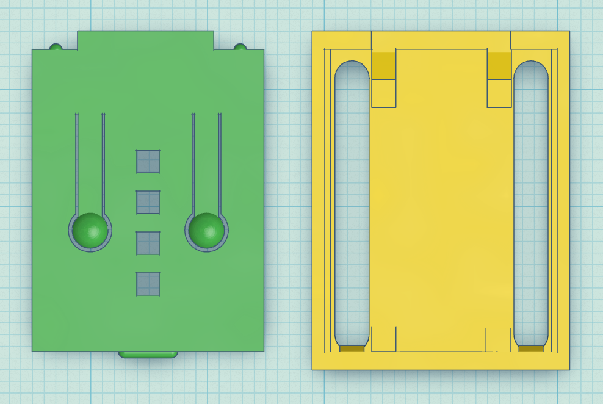
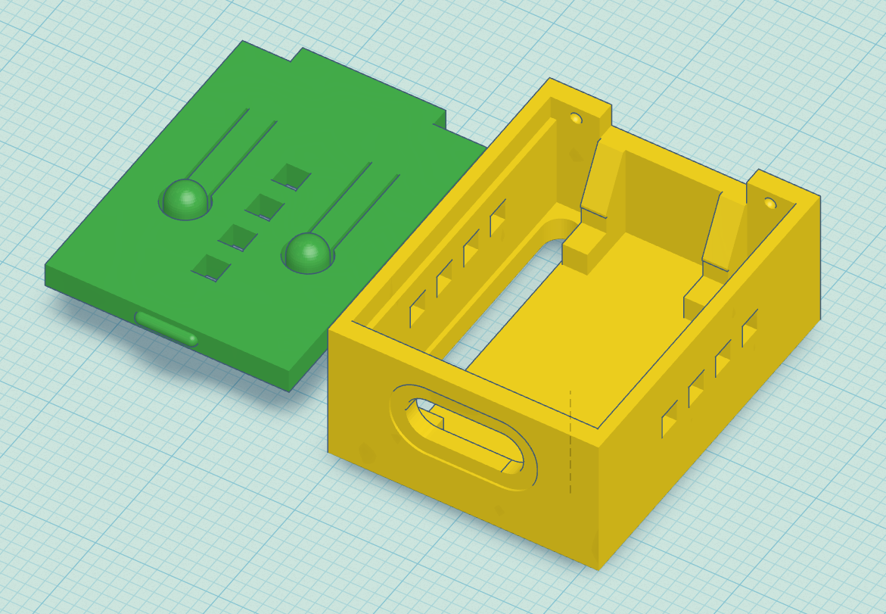
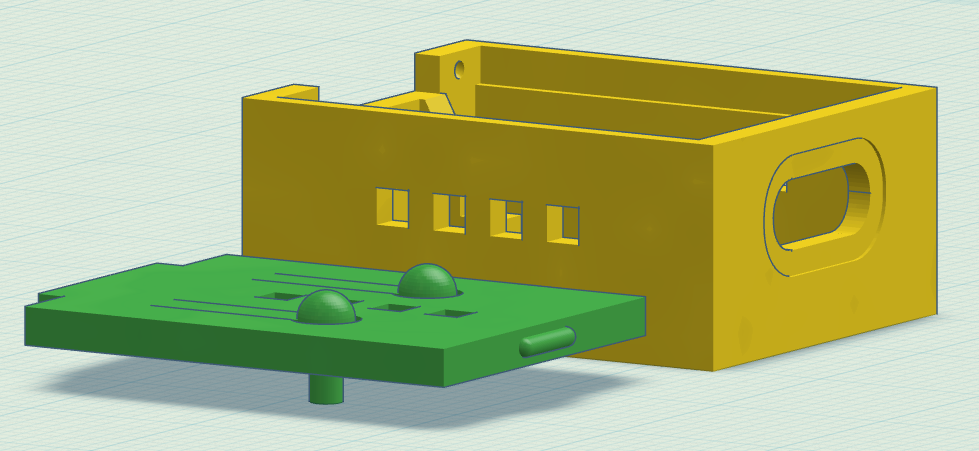
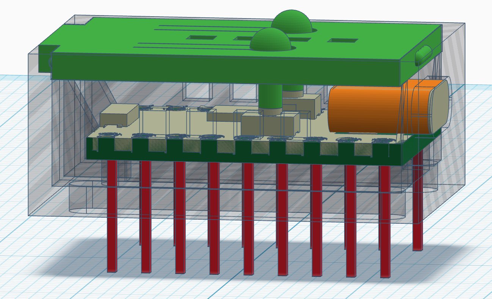
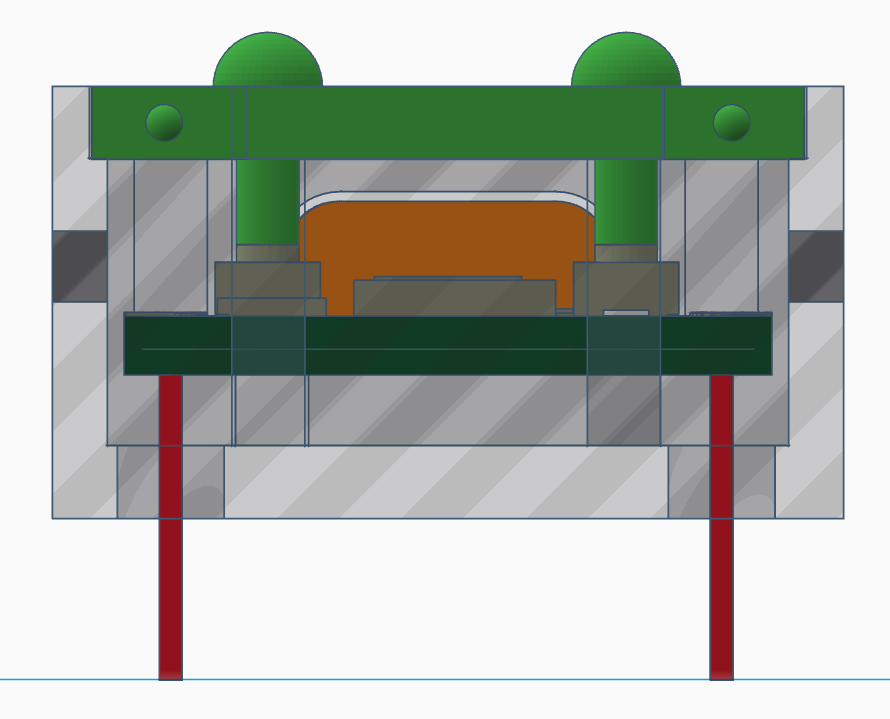
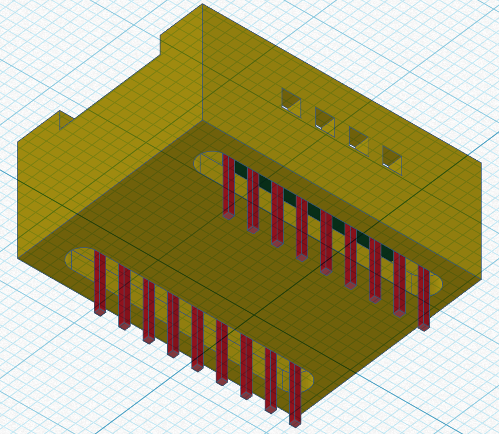
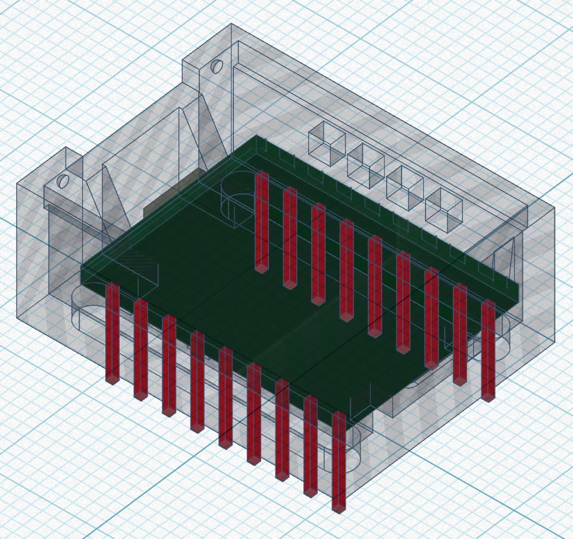

Prototipo 2
Seconda iterazione della custodia: correzioni alle tolleranze, miglioramento del sistema di chiusura e nuove verifiche di stampa con BambuLab A1.
Descrizione
Il secondo prototipo incorpora tutte le correzioni identificate dopo il primo test. La scatola è stata allungata di 1 mm per facilitare l'inserimento della scheda e i due slot sul fondo sono stati estesi per evitare che i pin tocchino la base. La ventilazione è stata migliorata con aperture su entrambi i lati della scatola e sul coperchio, raggiungendo la superficie minima richiesta.
Un'importante novità di questo prototipo è l'integrazione di due pulsanti flessibili nel coperchio, che permettono di azionare i tasti BOOT e RST della scheda senza dover aprire la custodia. Il modello è stato progettato in Tinkercad, esportato in STL e stampato in PLA con la stampante BambuLab A1.
Vantaggi (Pros)
- La scheda si inserisce agevolmente grazie all'allungamento di 1 mm.
- I pulsanti BOOT e RST sono azionabili dal coperchio senza aprire la custodia.
- Ventilazione migliorata su entrambi i lati e sul coperchio.
- Slot per i pin estesi garantiscono accesso completo a tutti i GPIO.
- Apertura USB-C correttamente allineata con la porta della scheda.
Design 3D







Problemi riscontrati
- (Inserito provvisoriamente. Da modificare in base ai risultati dei test). I clip di chiusura risultavano troppo rigidi e uno si è rotto durante il test di assemblaggio.
- (Inserito provvisoriamente. Da modificare in base ai risultati dei test). Il foro per il pulsante BOOT necessitava di un diametro leggermente maggiore.
- (Inserito provvisoriamente. Da modificare in base ai risultati dei test). Lo spessore delle pareti era eccessivo in alcuni punti, aumentando inutilmente il peso.
Conclusioni
(Inserito provvisoriamente. Da modificare in base ai risultati dei test). Il secondo prototipo ha confermato il corretto funzionamento delle tolleranze e dell'apertura USB-C. I problemi residui riguardano la robustezza dei clip e alcune finiture. Questi aspetti verranno risolti nel design finale, dove si interverrà anche sull'ottimizzazione dello spessore delle pareti.